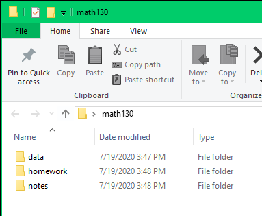

2+2[1] 4After completing this lesson learners will be able to:
Follow the instructions appropriate for your operating system.
The basis of programming is that we write down instructions for the computer to follow, and then we tell the computer to follow those instructions.
We write, or code, instructions in R because it is a common language that both the computer and we can understand (with practice).
We call the instructions commands and we tell the computer to follow the instructions by executing (also called running) those commands.
Learning how to code is like learning a new language. There are rules and exceptions, and it can be extremely precise and sometimes frustrating in how literal it is.
We will be interacting with the programming language R only through R Studio. Not by itself. Typically are four panes, or windows, in R Studio. When you first start the program, you may only see three.

The console (left side) is where you see the execution of commands. You can type commands directly into the console and press Enter to execute those commands.
R is an overgrown calculator
Once these commands are submitted (the code is run) they will be forgotten when you close the session. To save your commands you’ll want to write them in a script file.
This pane is where you will write/view R and Quarto scripts. Some outputs (such as a dataset) will appear as a tab here.
You should now have four panes, with a new untitled1.R script file in the top left. When you write R code here you can save these commands, and rerun them later on demand.
You will see the command echoed down in the Console along with the answer. We will come back to using scripts in the next lesson.
The Environment / History pane (top-right) shows all the objects you’ve created in your current R session — for example, data frames, variables, or plots you’ve assigned.
There are also some additional tabs in this area, like Connections, Build, Tutorial, and sometimes Git. We won’t cover those here, but RStudio has many additional tools and features available as you learn more.
The Files / Plots / Packages / Help pane is used to explore files, view plots, manage packages, and read help pages.
Setting preferences in R Studio

This ensures that each time you restart R, you start with a clean environment instead of carrying forward objects from a previous session.
R is considered an Open Source software program. That means many (thousands) of people contribute to the software. They do this by writing commands (called functions) to make a particular analysis easier, or to make a graphic prettier.
When you download R, you get access to a lot of functions that we will use. However these other user-written packages add so much good stuff that it really is the backbone of the customizability and functionality that makes R so powerful of a language.
For example we will be creating graphics using functions like boxplot() and hist() that exist in base R. But we will quickly move on to creating graphics using functions contained in the ggplot2 package. We will be managing data using functions in dplyr and reading in Excel files using readxl. Installing packages will become your favorite past-time.
When the download and install is complete, you should see a message similar to:
The downloaded binary packages are in
C:\Users\Robin\AppData\Local\Temp\Rtmpi8NAym\downloaded_packagesR is case sensitive and spelling matters. If you get an error message like the following.
Warning in install.packages :
package ‘ggplot’ is not available (for R version 3.5.1)The correct package name is ggplot2, not ggplot.
Additional packages can be installed from the ‘packages’ tab.
Install all the things!

Now that you’re a package installing pro, go ahead and install the following packages that we will be using in the next few weeks.
Check to see if you have a package installed by looking in the packages tab. You can also type the command installed.packages() into the console and examine the output.
tidyverse.
“The tidyverse is an opinionated collection of R packages designed for data science. All packages share an underlying design philosophy, grammar, and data structures.”
We will specifically be using the dplyr, ggplot2 and readxl packages that are part of, and thus installed with, the tidyverse. In these lessons we will load the specific package that we need (e.g. only dplyr or only ggplot2), but loading the tidyverse has the same effect of readying the necessary functions as loading each individual package. Learn more about the tidyverse.
It is good practice to keep a set of related data, analyses, and text self-contained in a single folder called the working directory. For example keeping all files related to one class in it’s own folder, separate from other classes. If you are taking another class using R at the same time as this one, it’s even MORE important to keep your files separate.
THIS SHOULD NOT BE YOUR DOWNLOADS FOLDER
Choose one of the four naming convention shown below for your class folder and stick with it. These are snake_case, camelCase, kebab-case or UPPER_SNAKE.

math130 using your chosen naming convention.data, homework, notes.
When you download a file, right click and “Save as” or “Save target as” and actively choose where to download this file.
R projects are a great way of keeping all files for one project all together, and makes importing data much easier by using relative paths instead of absolute ones. Plus this ensures reproducibility by others (because no-one else stores their files at C:\users\rdonatello\myprojects\math130)
This will open a new R Studio window. Go ahead and close both R Studio windows for now (Don’t save Untitled1.R). We’ll see how to use R Projects next.
If you think about wanting to work on a report written in Microsoft Word, or a video that you want to edit, the common practice is to navigate to that file and double click to open that file in the appropriate program. We don’t tend to open the program first, and then try to open the file from within the program. Using R Projects is somewhat the same.
You can tell you are in an R Project by looking in the top right corner by the Environment pane and seeing if the R project cube has your class folder name

Unless you’re returning to work in R Studio in a short while, you should make a habit to save all open tabs and completely shut down R studio when you are done working. This ensures your environment is cleared.
To restart R without shutting the entire window down, go to the file menu bar in the top,
Session –> Restart R and Clear Output
This is good to do when switching between projects/classes.